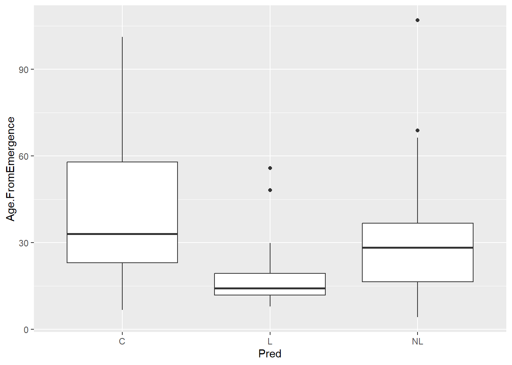
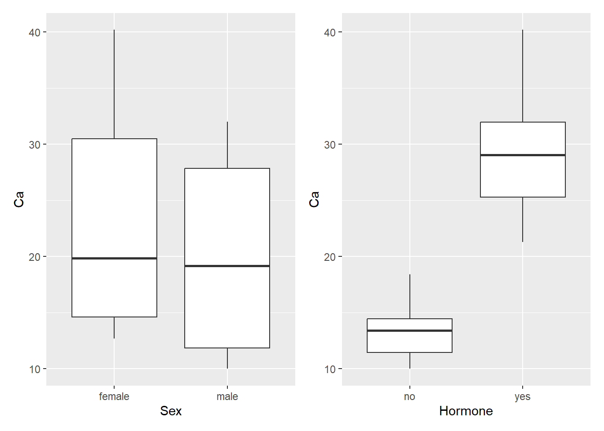
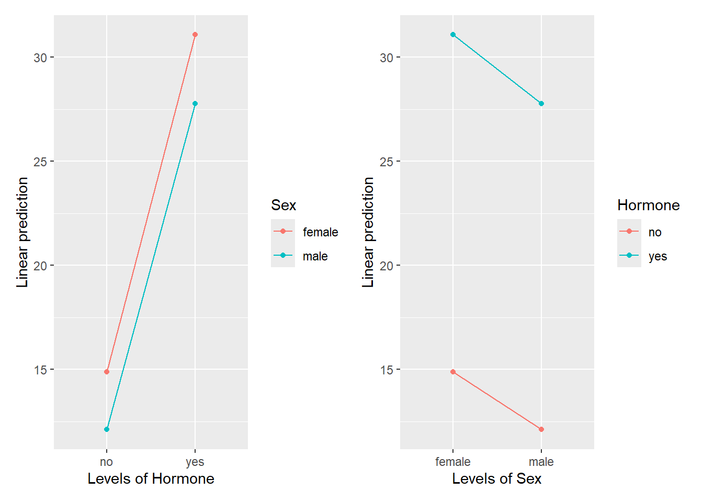

Ejercicios Módulo 5
Notas
Las librerías
{ggplot2},{car}las tablas de datos de{UsingR},{datarium}y{Stat2Data}están precargadas en la página.La tabla de datos
ranasdel Prof. Touchon también está precargada.
Ejercicios 5.1
La concentración media de glucosa en ratones sanos se ha estimado en un rango entre 80 y 100 mg/dL. En un experimento, se han medido las siguientes concentraciones de glucosa en 10 ratones de una línea genética que se presume tendría potencial de ser modelo de hiperglucemia. Determina:
1. La media aritmética de la muestra es
2. La desviación estándar de la muestra es
3. El límite inferior del intervalo de confianza (bajo la distribución de Student) es
4. El límite superior del intervalo de confianza (bajo la distribución de Student) es
5. La siguiente tabla de datos (blood) tiene las medidas de presión sistólica de sangre correspondientes a 15 pacientes (columna “machine”). De acuerdo al Centro de Prevención y Control de Enfermedades de los Estados Unidos (CDC), una presión sistólica saludable está por debajo de 120 mm Hg. Determina si la media de la muestra contenida en esta tabla de datos está por debajo de este valor sugerido por el CDC.
Chequea si la muestra es normalmente distribuida y decide si llevar a cabo un test paramétrico o no paramétrico.
Chequeamos normalidad
library(UsingR) # donde se encuentra la tabla de datos de blood
shapiro.test(blood$Machine)
Shapiro-Wilk normality test
data: blood$Machine
W = 0.96996, p-value = 0.8575Con un valor p mayor a 0.05 podemos concluir que la muestra está normalmente distribuida.
Para probar la hipótesis (que la presión sistólica está por debajo del valor sugerido por el CDC de 120 mm Hg), usaremos una prueba t de una cola. Específicamente, la prueba de “inferioridad”
t.test(blood$Machine, mu = 120, alternative = "less")
One Sample t-test
data: blood$Machine
t = -9.9155, df = 14, p-value = 5.188e-08
alternative hypothesis: true mean is less than 120
95 percent confidence interval:
-Inf 91.71055
sample estimates:
mean of x
85.6 Con un valor p menor a 0.05, concluimos que la hipótesis nula es rechazada. En esta prueba la hipótesis nula establece que la media de la presión sistólica de estos pacientes está por encima del valor de 120. En otras palabras, la muestra de pacientes sugiere que corresponden a una población que no padece de presión alta.
6. La tabla de datos normtemp tiene las medidas en grados Fahrenheit de temperatura corporal (columna “temperature”) correspondientes a 65 mujeres y 65 hombres (columna “gender”). Determina si existe una diferencia entre las temperaturas corporales de hombres y mujeres
Chequea si la muestra es normalmente distribuida y decide si llevar a cabo un test paramétrico o no paramétrico.
Chequeamos normalidad
library(UsingR) # donde se encuentra la tabla de datos de normtemp
# normalidad de los datos de los hombres
shapiro.test(subset(normtemp, gender == 1)$temperature)
Shapiro-Wilk normality test
data: subset(normtemp, gender == 1)$temperature
W = 0.98941, p-value = 0.8545# normalidad de los datos de las mujeres
shapiro.test(subset(normtemp, gender == 2)$temperature)
Shapiro-Wilk normality test
data: subset(normtemp, gender == 2)$temperature
W = 0.96797, p-value = 0.09017En ambos casos, con valores p mayor a 0.05 podemos concluir tanto las mediciones de temperatura de hombres y mujeres están normalmente distribuidas. Por lo tanto podemos aplicar una prueba t de muestras independientes.
Recuerda que gracias a la corrección de Welch, no es necesario cumplir el supuesto de la homocedasticidad.
t.test(subset(normtemp, gender == 1)$temperature, subset(normtemp, gender == 2)$temperature)
Welch Two Sample t-test
data: subset(normtemp, gender == 1)$temperature and subset(normtemp, gender == 2)$temperature
t = -2.2854, df = 127.51, p-value = 0.02394
alternative hypothesis: true difference in means is not equal to 0
95 percent confidence interval:
-0.53964856 -0.03881298
sample estimates:
mean of x mean of y
98.10462 98.39385 # o tambien:
t.test(normtemp$temperature ~ normtemp$gender)
Welch Two Sample t-test
data: normtemp$temperature by normtemp$gender
t = -2.2854, df = 127.51, p-value = 0.02394
alternative hypothesis: true difference in means between group 1 and group 2 is not equal to 0
95 percent confidence interval:
-0.53964856 -0.03881298
sample estimates:
mean in group 1 mean in group 2
98.10462 98.39385 Con un valor p menor a 0.05, concluimos que la hipótesis nula es rechazada. Es decir, existe diferencia estadísticamente significativa entre la media de temperatura entre hombres y mujeres. Donde, la temperatura media de los hombres es menor con respecto a la de las mujeres.
7. La tabla de datos mice2 tiene las medidas del peso de 10 ratones antes y después de haber sido sometidos a una determinada dieta. Encuentra si existe una diferencia significativa en el peso de estos ratones antes y después del régimen de dieta al que fueron expuestos. ¿Ganaron o perdieron peso?
Chequea si la muestra es normalmente distribuida y decide si llevar a cabo un test paramétrico o no paramétrico.
Chequeamos la normalidad
library(datarium) # donde se encuentra la tabla de datos mice2
# normalidad de los datos antes de la dieta
shapiro.test(mice2$before)
Shapiro-Wilk normality test
data: mice2$before
W = 0.92399, p-value = 0.3914# normalidad de los datos despues de la dieta
shapiro.test(mice2$after)
Shapiro-Wilk normality test
data: mice2$after
W = 0.95283, p-value = 0.7021Con valores p mayores a 0.05, podemos concluir que los datos están normalmente distribuidos. Cómo se tratan de observaciones tomadas de los mismos ratones antes y después de la dieta, entendemos que los datos están correlacionados. Por lo tanto, lo más conveniente es aplicar una prueba t de muestras emparejadas
t.test(mice2$before, mice2$after, paired = T)
Paired t-test
data: mice2$before and mice2$after
t = -25.546, df = 9, p-value = 1.039e-09
alternative hypothesis: true mean difference is not equal to 0
95 percent confidence interval:
-217.1442 -181.8158
sample estimates:
mean difference
-199.48 Con un valor p menor a 0.05, podemos concluir que existe una diferencia estadísticamente significativa en el peso de los ratones antes y después de la dieta en una media de 199.48 gramos
8. En el vector colon (parte de los datos cancer de {UsingR}), está el tiempo de sobrevivencia en días de pacientes con cáncer de colon desde el momento de su diagnóstico hasta su deceso. Determina si la media de los días de supervivencia de esos pacientes es de 370 días
Chequea si la muestra es normalmente distribuida y decide si llevar a cabo un test paramétrico o no paramétrico.
Chequeamos si los datos están normalmente distribuidos (aplicando las transformaciones logarítmica y raíz cuadrada, los datos se pueden normalizar. Asumamos por un instante que este no es el caso para ilustrar el uso de la prueba de Wilcoxon para datos que no están normalmente distribuidos).
library(UsingR) # de donde provienen los datos de cancer de colon
colon <- cancer$colon
shapiro.test(colon)
Shapiro-Wilk normality test
data: colon
W = 0.76056, p-value = 0.0006134Aplicamos la prueba de Wilcoxon para probar la hipótesis nula (que la media de supervivencia es de 370 días)
wilcox.test(colon, mu = 370)
Wilcoxon signed rank exact test
data: colon
V = 78, p-value = 0.9632
alternative hypothesis: true location is not equal to 370Como podemos, con un valor p mayor a 0.05, podemos concluir que la hipótesis alternativa se acepta. Es decir, que la media de supervivencia de esta muestra de pacientes con cáncer de colon es de 370 días.
Ejercicios 5.2
Notas sobre los siguientes ejercicios
Debido a problemas de compatibilidad de las versiones de librerías de R para la página web, algunas funciones no corren correctamente.
Te recomiendo resolver estos ejercicios en tu computador y luego compararlas con las soluciones aquí mostradas.
1. Lleva a cabo un ANOVA de una vía con los datos de las ranas. El objetivo es encontrar si existe alguna diferencia entre la edad de salida del agua (Age.FromEmergence) determinada por los predadores (Pred).
Antes de llevar a cabo tu análisis, ten en cuenta lo siguiente:
Chequea los supuestos del ANOVA.
Es posible que necesites transformar la variable de respuesta.
{emmeans}puede generar las medias esperadas re-transformadas a sus unidades originales. Ejemplo:emmeans(lm2, specs = "Pred", type = "response")
1. Comenzamos con un breve análisis exploratorio
library(ggplot2)
ranas |>
ggplot(aes(x = Pred, y = Age.FromEmergence)) +
geom_boxplot() 
A un primer vistazo, podemos ya sospechar que la edad a la que emergen los renacuajos está altamente influenciada por la presencia de depredadores en el medio (menor tiempo en emerger en su presencia).
2. Llevo a cabo el ANOVA de una vía y chequeo los supuestos
library(car)
ranas1 <- lm(Age.FromEmergence ~ Pred, data = ranas)
# normalidad de los residuales
residuos <- ranas1$residuals
shapiro.test(residuos)
Shapiro-Wilk normality test
data: residuos
W = 0.89687, p-value = 1.134e-05# homogeneidad de la varianza
leveneTest(ranas1)Levene's Test for Homogeneity of Variance (center = median)
Df F value Pr(>F)
group 2 6.7212 0.002066 **
75
---
Signif. codes: 0 '***' 0.001 '**' 0.01 '*' 0.05 '.' 0.1 ' ' 1Veo que ambos supuestos no se cumplen, aplico una transformación logarítmica y chequeo de nuevo.
ranas2 <- lm(log(Age.FromEmergence) ~ Pred, data = ranas)
# normalidad de los residuales
residuos <- ranas2$residuals
shapiro.test(residuos)
Shapiro-Wilk normality test
data: residuos
W = 0.98017, p-value = 0.2645# homogeneidad de la varianza
leveneTest(ranas2)Levene's Test for Homogeneity of Variance (center = median)
Df F value Pr(>F)
group 2 3.3772 0.03941 *
75
---
Signif. codes: 0 '***' 0.001 '**' 0.01 '*' 0.05 '.' 0.1 ' ' 1La homogeneidad aún no se cumple. Podría intentar otras transformaciones, pero tengo otra opción. La función leveneTest tiene por default centrar la prueba alrededor de la mediana. También es válido el centrar la prueba alrededor de la media, esto lo conseguimos simplemente agregando un argumento a esta función, así:
# homogeneidad de la varianza
leveneTest(ranas2, center = "mean")Levene's Test for Homogeneity of Variance (center = "mean")
Df F value Pr(>F)
group 2 3.0464 0.05345 .
75
---
Signif. codes: 0 '***' 0.001 '**' 0.01 '*' 0.05 '.' 0.1 ' ' 13. Interpreto mi ANOVA
Anova(ranas2)Anova Table (Type II tests)
Response: log(Age.FromEmergence)
Sum Sq Df F value Pr(>F)
Pred 9.710 2 12.389 2.244e-05 ***
Residuals 29.392 75
---
Signif. codes: 0 '***' 0.001 '**' 0.01 '*' 0.05 '.' 0.1 ' ' 1Como ya lo veíamos venir, al menos uno de los tratamientos tiene una media distinta.
4. Llevo a cabo comparaciones múltiples
En este punto es importante recordar que hemos transformado la variable de respuesta para cumplir con los supuestos del ANOVA. Podríamos llevar a cabo las comparaciones múltiples directamente sobre esta transformación, pero eso implicaría que tendremos que hacer las transformación de vuelta de manera manual en algún momento. Para evitarnos eso, {emmeans} nos ofrece la funcionalidad de que lleva a cabo esa transformación por nosotros si utilizamos el argumento type:
library(emmeans)
library(multcomp)
mmranas <- emmeans(ranas2, specs = "Pred", type = "response")
tukey_comps <- contrast(mmranas, specs = "Pred", method = "tukey")
cld(tukey_comps) contrast ratio SE df null t.ratio p.value .group
L / NL 0.604 0.121 75 1 -2.516 0.0368 1
C / NL 1.307 0.262 75 1 1.335 0.3806 2
C / L 2.165 0.339 75 1 4.936 <.0001 3
P value adjustment: tukey method for comparing a family of 3 estimates
Tests are performed on the log scale
significance level used: alpha = 0.05
NOTE: If two or more means share the same grouping symbol,
then we cannot show them to be different.
But we also did not show them to be the same. 2. Lleva a cabo un ANOVA de dos vías no aditivo con los datos BirdCalcium de {Stat2Data}. Estos datos corresponden a las mediciones de calcio en el plasma de petirrojos. 10 petirrojos macho y 10 petirrojos hembras fueron divididos en grupos de 5. A 5 aves de cada sexo les fueron suministradas hormonas, mientras que a las 5 restantes se les suministró una dieta control. La pregunta de investigación consistió en determinar si posibles variaciones de calcio en estas aves dependen del sexo, hormonas o una interacción de estas
Antes de llevar a cabo tu análisis, ten en cuenta lo siguiente:
Chequea los supuestos del ANOVA.
Es posible que necesites transformar la variable de respuesta.
{emmeans}puede generar las medias esperadas re-transformadas a sus unidades originales. Ejemplo:emmeans(lm2, specs = "Pred", type = "response")
1. Comenzamos con un breve análisis exploratorio
Aquí, una consideración importante. Es necesario que le dejemos saber a R que el factor O2Conc es de hecho un factor. Tal cual lo tenemos en la tabla original, este aparece como un número
library(Stat2Data)
library(ggplot2)
library(patchwork)
data("BirdCalcium")
p1 <- BirdCalcium |>
ggplot(aes(x = Sex, y = Ca)) +
geom_boxplot()
p2 <- BirdCalcium |>
ggplot(aes(x = Hormone, y = Ca)) +
geom_boxplot()
p1+p2
A un primer vistazo, podemos esperar a encontrar diferencias estadísticamente significativas entre los niveles de calcio determinados por la presencia de hormonas en la dieta, pero no tanto con respecto al sexo de los petirrojos.
2. Llevo a cabo el ANOVA de una vía y chequeo los supuestos
library(car)
bird <- lm(Ca ~ Sex * Hormone, data = BirdCalcium)
# normalidad de los residuales
residuos <- bird$residuals
shapiro.test(residuos)
Shapiro-Wilk normality test
data: residuos
W = 0.9759, p-value = 0.871# homogeneidad de la varianza
leveneTest(bird)Levene's Test for Homogeneity of Variance (center = median)
Df F value Pr(>F)
group 3 2.6582 0.08353 .
16
---
Signif. codes: 0 '***' 0.001 '**' 0.01 '*' 0.05 '.' 0.1 ' ' 1Veo que ambos supuestos se cumplen.
3. Interpreto mi ANOVA
Anova(bird)Anova Table (Type II tests)
Response: Ca
Sum Sq Df F value Pr(>F)
Sex 45.90 1 2.3459 0.1451
Hormone 1268.82 1 64.8410 5.095e-07 ***
Sex:Hormone 0.36 1 0.0186 0.8931
Residuals 313.09 16
---
Signif. codes: 0 '***' 0.001 '**' 0.01 '*' 0.05 '.' 0.1 ' ' 1En este caso, solo uno de los efectos principales es significativo: Hormone. La interacción y el sexo de los petirrojos no influyen en diferencias de la concentración de calcio en su plasma sanguíneo.
5. Llevo a cabo gráficos de interacción
library(emmeans)
p3 <- emmip(bird, Sex ~ Hormone)
p4 <- emmip(bird, Hormone ~ Sex)
p3 + p4
Como vemos en los gráficos de interacción, las líneas de interacción paralelas. Algo que era de esperarse al ya haber visto en la tabla del ANOVA que el valor p de la interacción fue mayor a 0.05.
4. Llevo a cabo comparaciones múltiples
En este caso ya no resulta necesario por cuanto el efecto principal que estadísticamente es significativo posee únicamente dos niveles, es fácil distinguir a partir del primer gráfico que hicimos en nuestro breve análisis exploratorio la inclusión de hormonas en la dieta de los petirrojos determina un incremento de Ca en su plasma sanguíneo.